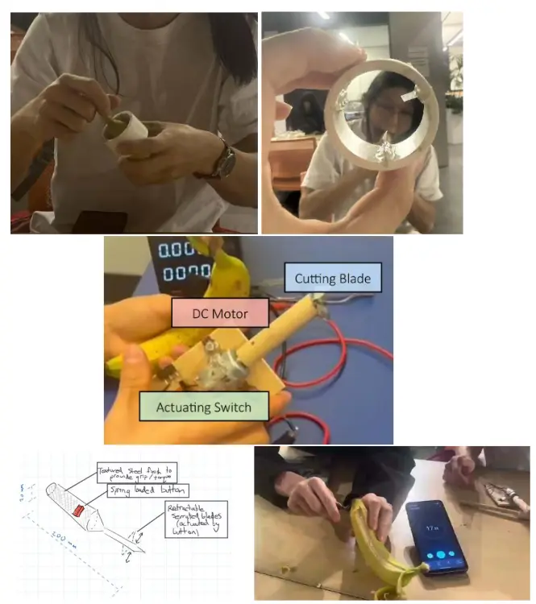
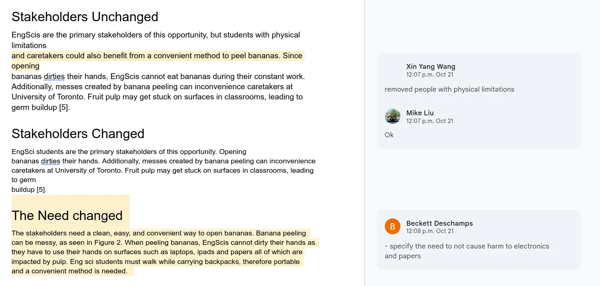
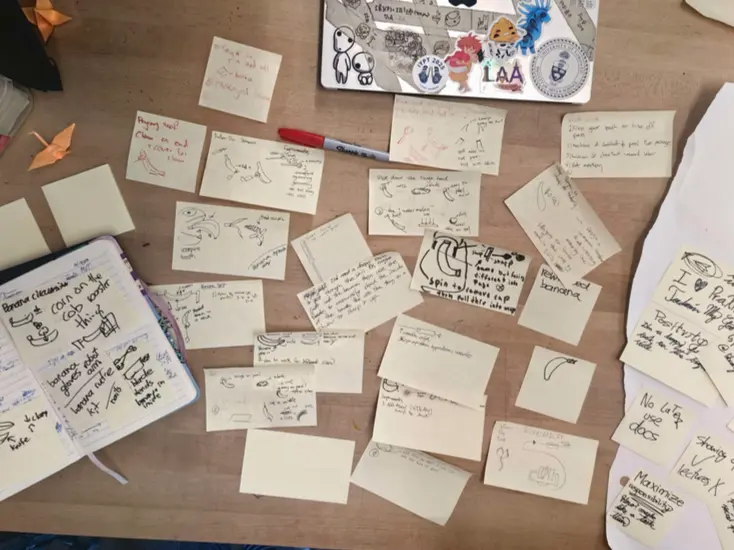
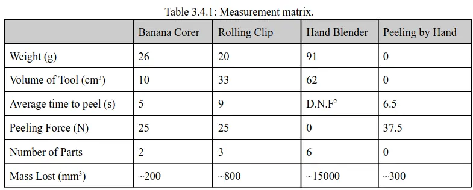

Praxis I Design Report
To peel a banana or not to peel--that is the question.
Team Credits: Yang Wang, Mike Liu, Beckett DeschampsDesign Summary One-Pager
My Praxis I project was centered around designing a banana peeler for EngSci students, who often eat during lectures and find banana pulp residue inconvenient when using laptops and writing utensils. Our team generated three physical prototypes, which we named Rolling Clip, Hand Blender, and Banana Corer. These can be seen below:

A PDF of our design report can be found here.
As an interesting conclusion to our project, following several converging methods, our recommended design ended up being the null case: peeling by hand. The Banana Corer was the strongest physical concept, but none of the tools beat the convenience of hands across enough criteria to justify carrying one to class. As we wrote as the concluding remark in the report: "sometimes, convenience trumps all, even a better product".
CTMF 1: Framing with NGO Frameworks
Before investigating the solution space, our team had to reframe the problem. The original report provided an pretty broad need, which also included cleaners as stakeholders. This felt unreasonable as if the EngSci could not even keep him or herself clean, then the project was already failed. After removing this, we were able to make the NGOs of the report more specific by propagating this change through the NGO framework.

We also paid specific mind to the requirements that were regarding portability and ease of us. We felt as the main stakeholders were students, the goals should reflect that. We did this by rewriting the section with the new framing of student portability being a priority, as opposed to facility cleanliness.
This framing was reflected later on in diverging and converging, which made heavy use of our NGO frameworks. However, what became food for thought after the project was whether we had narrowed the scope too much.
Takeaways
Framing was a strong first step in differentiating our solution from others. By changing our NGOs, we put this into writing, and it propagated throughout the rest of the design process. That said, framing too early may have also locked us in. For instance, our requirement regarding tool weight, or opening force made lots of sense for portable tools, but it also prevented us from considering other options such as pre-peeled and packaged bananas.
In the future, returning to reframing more and leaving the NGO framework malleable would be helpful to prevent any anchoring to a subsect of the design space.
CTMF 2: Diverging using 6-3-5 Brainwriting
In 6-3-5, each person writes three ideas, then passes the sheet around so others can build on them. The point is to generate a lot of raw ideas fast.
To diverge, our team used 6-3-5 brainwriting as the starting point. It worked reasonably well for us. The three concepts we ended up prototyping each came from distinct starting points in the brainwriting session. It also created some wild ideas, such as the hand blender. In reflection, this is caused by the fast-paced nature. After maybe 3 or 4 rational ideas come out, and you only have 20 seconds left, the ideas that come out start to get questionable! Of course, this is not necessarily a bad thing at all.

What was nice about our usage of 6-3-5 brainstorming was that it didn't require any previous material to get started. SCAMPER and morph charts require certain amounts of the design to be decided. 6-3-5 leaves that open. Getting everyone in the team to contribute equally by design of the exercise was also great!
Takeaways
In hindsight, 6-3-5 was a great place to get started for our diverging process. It generated a large amount of ideas quickly, which let us scope out our design space. While most ideas tended to be weak, it was later filtered out by our requirements framework, and strengthened by the SCAMPER process we used afterwards!
Maybe also an underappreciated side-effect, but it was great for team bonding! Getting everyone to pitch in crazy ideas was a great icebreaker.
CTMF 3: Converging with Measurement Matrix
Our team used three converging tools: pairwise comparison, a measurement matrix, and Pugh charts. In hindsight, the measurement matrix was the most effective tool for our needs. At the time, we had to select a recommended design from our three prototypes. The other CTMFs which we used (Pairwise comparison, Pugh charts) felt to not be quantitative enough. An image of our measurement matrix is shown below.

The measurement matrix worked well given that our ECs were well-defined with good testing methodologies. In our case, we had the requirements to complete the matrix with prototypes of each design concept, which was also helpful.
The difficulty with the measurement matrix was that it is hard to weight each category. It is possible to obtain a quantitatively better design concept for each row, however, choosing which is the 'best' is a difficult decision. In our situation, there were enough rows in which the null case won (3/6) that we could justify choosing it as the recommended design. However, even so, we had to justify convenience as the most important factor before doing so.
Takeaways
In our specific case, the measurement matrix was the tool that helped us converge from our last 3 ideas to a single recommended design (the null case). But it is important to remember that the matrix requires numerous things to perform well:
- Appropriate ECs for the opportunity
- Quantitative data for each EC and design concept
- Justified weighting for each category
Effect on my Position
Praxis I was my first formal encounter with structured engineering design. Looking back from the end of second semester, the gaps are pretty visible.
I remember our long discussions on whether the null case recommendation was valid. It was a bit of a step for me. After all of our work diverging and converging, was it right to recommend no solution? And it felt like if you only twisted the problem a little bit, placing more emphasis on efficiency for instance, another design could be better.
In hindsight, this was definitely me wading in the waters of multiplism (Perry's intellectual model). It was hard to converge past ideas that perhaps should've been eliminated. We also faced challenges in reframing past the first iteration, which left out large portions of the design space.
Overall, my experience in Praxis I was important in introducing me to engineering design, and also lots of fun! This pushed me towards considering multiplism in design, and was also a great way to be introduced to FDCR, which I have used in all my design projects since in one way or the other.
This brings to an end my reflection on my recent projects. Perhaps I will update this site further as I move along in my undergraduate engineering journey :)
References
[1] Lofgreen, J., & Carrick, R. (2026). ESC102 Lecture Slides.
[4] Yang, W., Liu, M., Deschamps, B., VK, L. (2025). Praxis Design Submission.